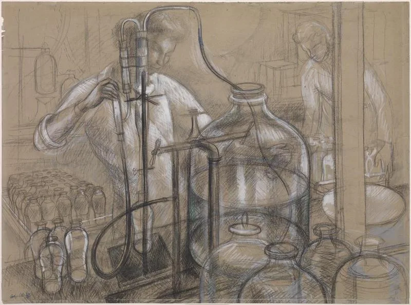
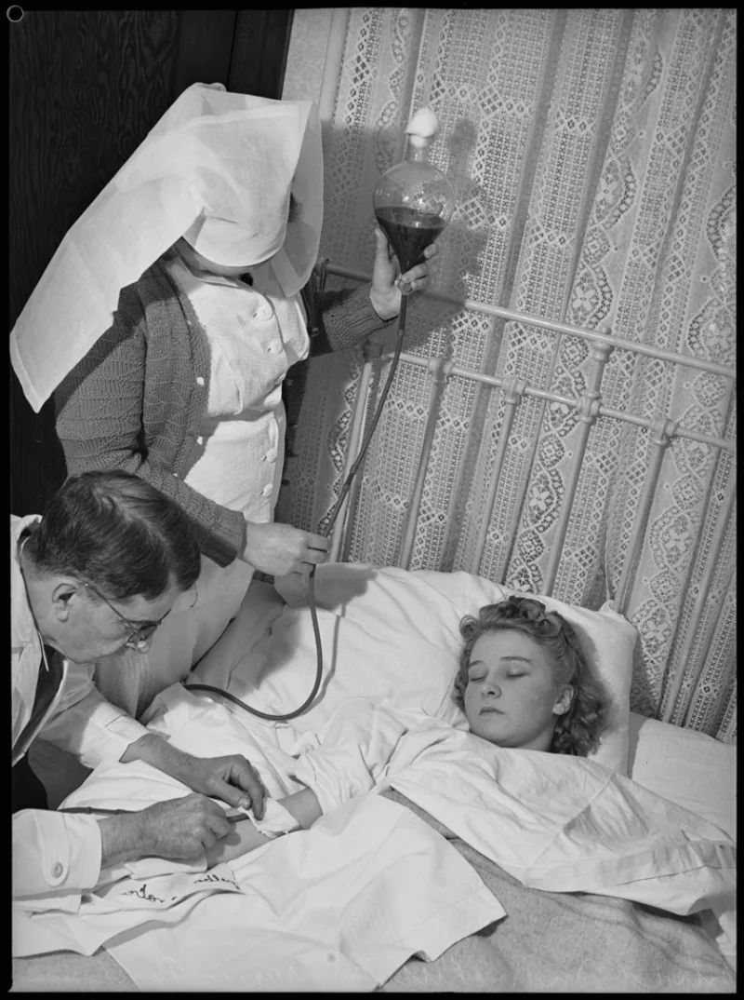
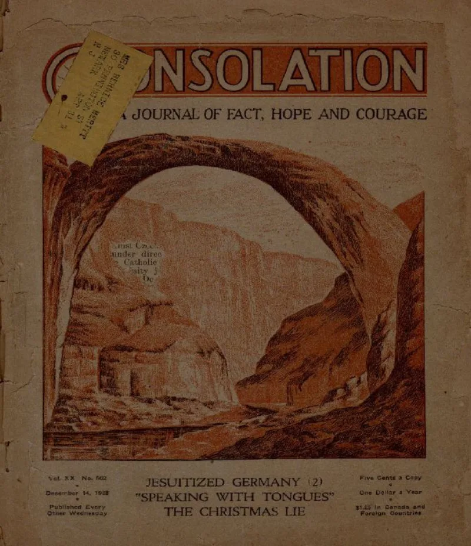

No good counter-argument has been published by the Watchtower.
The ban on blood transfusions is not original to the movement. It arrived in The Watchtower of July 1, 1945 (pp.
198-201). Before that, their own Golden Age (1925 and 1929) and Consolation (1940) had mentioned transfusion favourably.
It became a disfellowshipping offence only in 1961.
The basis is Acts 15:28-29, plus Genesis 9:4 and Leviticus 17. In every one of those places the subject is eating.
Genesis 9 regulates eating animal flesh. Leviticus 17 concerns hunting and slaughter.
The decree in Acts 15 lists blood beside things strangled and food offered to idols. Those are food categories.
It was easing table fellowship between Jewish and Gentile believers.
"Abstain from blood" (Acts 15:29) has no qualifier. To abstain from a thing means not taking it into your body by any route.
A patient told to abstain from alcohol may not take it through a drip. Blood is sacred because life belongs to God (Genesis 9:4; Leviticus 17:11), and that goes beyond diet.
The only sanctioned use of blood was on the altar. Early Christians such as Tertullian and Minucius Felix treated consuming blood as abhorrent, which suggests the decree was read as lasting.
The alcohol analogy fails on its own terms. Alcohol works the same way by any route.
Transfused blood is not digested at all; it functions as an organ. And the Watchtower now permits organ transplants and every blood fraction.
That concedes that the eating analogy cannot carry the weight.
Strong for you, and it must be handled gently. People have died holding this line, sincerely, believing it was God's command.
The 1945 date and the earlier favourable articles are admitted facts from their own literature. The Acts 15 debate is real, so grant them that side of it.
"I know you would give your life over this, and I am not treating that lightly. Can you show me where your movement taught it before 1945?"



'Abstain from blood' has no qualifier. To abstain means by any route.
Here is the steelman. 'Abstain from blood' (Acts 15:29) has no qualifier. To abstain from a thing means not taking it into the body by any route. A patient told to abstain from alcohol may not take it through a drip.
Blood's sacredness goes beyond diet, because life belongs to God (Genesis 9:4; Leviticus 17:11). The only sanctioned use of blood was on the altar. Early Christians such as Tertullian and Minucius Felix treated the consuming of blood as abhorrent. That suggests the decree was read as lasting, not as a temporary table-fellowship measure.
Strong for you, and handle it gently: people have died holding this line.
The 1945 date and the earlier favourable references are admitted facts from their own literature.
The defense fails at its own analogy. Alcohol works the same way by any route. Transfused blood is not digested at all; it functions as an organ. And the Watchtower itself permits organ transplants and every blood fraction. That concedes the eating analogy cannot carry the weight.
Graded unrefuted rather than admitted, because the Acts 15 debate has a real Witness side. Severity is critical, because the policy kills. Handle it with matching care. People have died holding this line in good conscience.